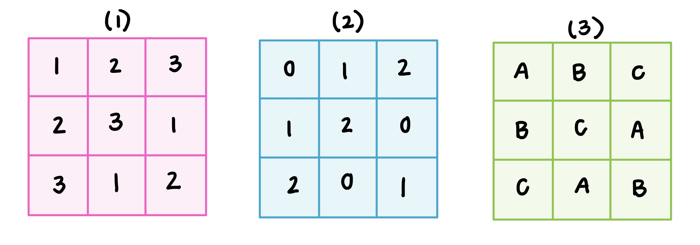

From Latin Squares to Loops: When Tables Stop Being Groups
Why every group table is a Latin square, but not every Latin square is a group
What are Latin Squares?
We encounter Latin Squares every day without even realizing it. They're in puzzles, tournament/work scheduling, classroom seating arrangements, etc. They're pretty much anywhere we want to arrange choices in such a way such that no two same choices end up in the same row or column. The most famous example of a Latin Square that you may enjoy is the Sudoku puzzle! Now that we have a faint idea of what Latin Squares are, let's formalize it.
A Latin Square is an $n \times n$ matrix with $n \in \mathbb N$ such that no symbol or number appears more than once in each row or column. In other words, each symbol appears exactly once in every row and exactly once in every column. Usually, Latin Squares either consist of numbers from $1$ to $n$, but letters and symbols are also often used. We refer to the number $n$ as the "order" of the Latin Square.
Below are some valid examples of Latin Squares of order $n = 3$:

Below is a short video I created showing how Latin square ideas can help rotate nurses fairly across departments. Please excuse my stuttering; I was nervous!
Figure 1. A nurse scheduling schedule based on Latin square structure.
While Latin Squares can be viewed as nothing but some sort of puzzle or scheduling tool, they also show up in Abstract Algebra. Specifically, the Latin Square property is present in Cayley tables, which are the operation tables of finite groups.
A Cayley table shows the result of combining elements of a group using the group operation. The rows and columns are labeled by the elements of the group, and each entry gives the result of applying the operation to the corresponding row and column elements. What makes this table special is that every group element appears exactly once in each row and column. This happens because group operations are reversible: every element has an inverse, so multiplying by a fixed element rearranges the elements of the group without repeating any of them. As a result, the Cayley table of any finite group always satisfies the Latin Square property and, thus, the Cayley table of any finite group always produces a Latin Square.
The Main Question
At this point, we know that every finite group produces a Latin Square through its Cayley table, but this leads to an interesting question:
Does every Latin Square come from a group?
We may be tempted to say "yes," since both Latin Squares and Cayley tables follow the same row-and-column rule: each symbol/number appears exactly once in every row and column.
Interestingly enough, however, the answer to this question is actually no. While some Latin Squares come from groups, many don't. A Latin Square only guarantees that symbols/numbers don't repeat within rows or columns. In order for a Latin Square to represent a group, they must also satisfy the following Group Axioms:
- Closure
- Associativity
- Identity Element
- Inverse Element
In other words, every Cayley table is a Latin Square, but not all Latin Squares are groups.
Quasigroups and Loops
So what kind of structure does a Latin Square represent if it is not a group? Even if a Latin Square doesn't come from a group, it still signifies a sort of algebraic structure. Whenever we think of the rows and columns of a Latin Square as "actions" and its entries as "results of an action," the table becomes a quasigroup.
A quasigroup is a set equipped with a binary operation where every element appears exactly once in each row and exactly once in each column of its operation table. Basically, quasigroups are algebraic structures whose tables satisfy the Latin Square property. This means every Latin Square produces a quasigroup. This guarantees that equations can be solved uniquely. For example, given $a * x = b$, we know there is exactly one solution $x$. Similarly, when $y * a = b$, there is exactly one solution $y$. This is possible because each element occurs at most once in each row and column.
A loop is a quasigroup that has one additional property: an identity element, $e$, such that $e * x = x$ and $x * e = x$ for all elements $x$ in the set. The identity acts like "do nothing" element. For example, it acts as a zero for addition or a one for multiplication, $0 * x = x$, $x * 0 = x$ are properties of 0 for addition in any standard form of the operation, whereas $1 * x = x$, $x * 1 = x$ for multiplication in any standard form.
So we've identified a hierarchy:
- Every group is a loop.
- Every loop is a quasigroup.
- Every quasigroup has an operation table that is a Latin Square.
However, we note that the reverse statements aren't always true.
Quasigroups and Loops aren't Groups
To see why quasigroups and loops aren't always groups, we can compare them directly back to the group axioms. A quasigroup already has closure because its operation table only uses elements from the same set. While it doesn't explicitly have an inverse element, it exhibits inverse-like behavior because equations like $a * x = b$ and $y * a = b$ have unique solutions. However, quasigroups don't have an identity element.
A loop, on the other hand, satisfies the same two axioms as quasigroups and has an identity element. So loops are closer to groups than quasigroups are, but, loops fail to be groups because they may lack the associativity requirement to be a group. Basically, $(a * b) * c ≠ a * (b * c)$ which means loops can't be groups.
We can summarize the differences like this:
- A quasigroup may fail to have an identity element.
- A loop has an identity element, but may fail associativity.
- A group has an identity element, inverses, and associativity.
This is why every group is a loop, but not every loop is a group. It is also why every loop is a quasigroup, but not every quasigroup is a loop.
Final Thoughts
So, what started as a seemingly arbitrary collection of squares in a grid has a profound relationship with the fundamental concepts of abstract algebra. Latin squares aren't solely confined to games like Sudoku or tournament scheduling. They can also fully capture the operation table of a finite group. Every finite group does give a Latin Square with its Cayley table and this led to the question if the reverse is true: Does every Latin Square come from a group? It comes down to a question about one of the group axioms: associativity. Every Latin Square can be viewed as a quasigroup because its row-and-column structure gives unique solutions to equations like $a * x = b$ and $y * a = b$. Some quasigroups also have an identity element, making them loops. Only when associativity is also present do we get a group.
This hierarchy is, in turn, captured by the sequence of inclusions of algebraic structures: Groups ⊂ loops ⊂ quasigroups. In conclusion, the Latin Square can be thought of as a starting point for many kinds of interesting algebraic structures. Just by dropping one axiom, new areas are discovered. What first looks like a puzzle grid becomes a doorway into deeper math.